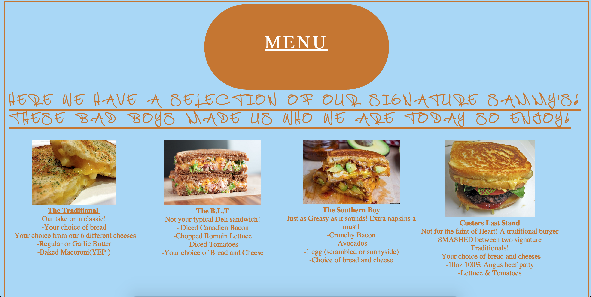
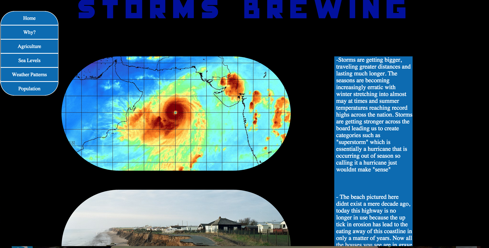
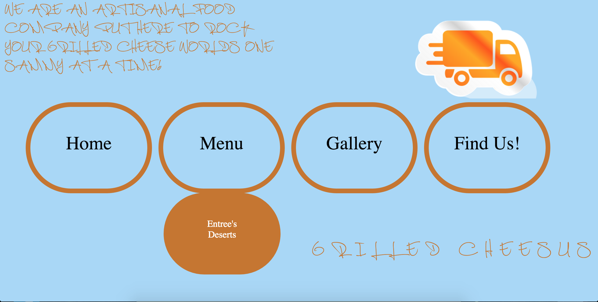
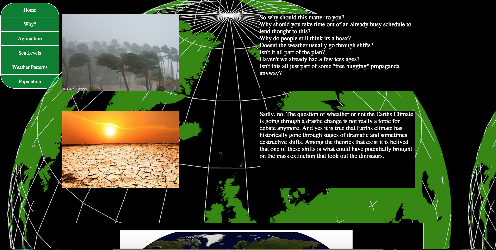

Walter Garcia
Web Designer
About
Resume
Selected Works
Contact Me
This page was designed as a gallery to show the diverse landscape of NYC graffiti.
An online menu page I designed for a food truck Company.

An informational page about Climate change I designed in a news article style layout.

This is the landing page I designed for the food truck company. A clean layout with a drop down menu.

An informational page about Climate change I designed in a news article style layout.
An informational page about Climate change I designed in a news article style layout.

This is a sampled selection of my work. Feel free to click on any image to be taken to the actual page! As my portfolio grows this page will be updated so be sure to check back to catch my latest projects!